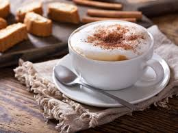
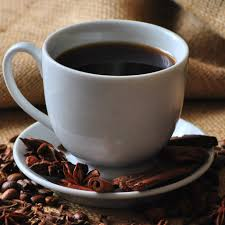
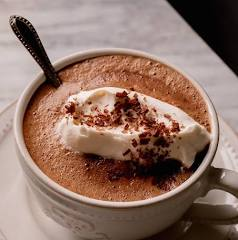

An espresso is a strong, concentrated coffee made by forcing hot
water through finely-ground coffee beans under high pressure. It
is the foundation of many popular drinks such as cappuccino,
latte, and mocha. The drink contains no milk or sugar by default
and is served in small portions called shots. Espresso has a bold,
rich, and slightly bitter flavor, topped with a golden layer of
crema. Although small in volume, it carries a powerful caffeine
kick. The method originated in Italy in the early 1900s and was
designed for quick preparation and intense flavor. Today, the term
“espresso” refers both to the brewing method and the small,
flavorful shot it produces.
Espresso
Cappuccino
A cappuccino is an espresso-based drink made with equal parts
espresso, steamed milk, and milk foam. It has a rich, balanced
flavor—stronger than a latte but smoother than a plain
espresso—enhanced by its thick, velvety froth. Many cafés top it
with cocoa powder or cinnamon for added aroma and taste.
Variations include “dry” cappuccinos with more foam and “wet” ones
with more milk. With one or two espresso shots, it delivers a
satisfying caffeine boost. The drink originated in Italy and takes
its name from the Capuchin monks, whose brown robes resemble the
color of the beverage. Today, the cappuccino remains a classic
morning favorite around the world.

Cappuccino
Latte
A latte, short for caffè latte meaning “milk coffee” in Italian,
is an espresso-based drink made with steamed milk and a small
layer of foam. It is known for its smooth, creamy texture and mild
flavor, as the milk softens the espresso’s strength. Lattes are
often flavored with syrups such as vanilla, caramel, or hazelnut,
and can be served hot or iced. They contain one or two shots of
espresso, giving them a moderate caffeine level. Originating from
Italy, the modern café-style latte became especially popular in
the U.S. and Europe during the 1980s. Today, it is often decorated
with latte art and enjoyed for its comforting, velvety taste.
Latte
Americano
An Americano is a simple yet flavorful coffee made by diluting
espresso with hot water. The result is a drink similar in strength
to drip coffee but with a smoother, richer taste. It offers the
depth of espresso without its intense concentration. Americanos
can be served hot or iced, and their strength can be adjusted by
varying the espresso-to-water ratio. The drink traces its origins
to World War II, when American soldiers in Italy diluted espresso
to make it resemble the coffee they were used to back home. Today,
the Americano is enjoyed globally for its mild yet full-bodied
character and its moderate-to-high caffeine content.

Americano
Mocha
A mocha is an espresso-based coffee drink that combines the
richness of coffee with the sweetness of chocolate. Made with
espresso, steamed milk, and a chocolate source such as syrup,
cocoa powder, or chocolate sauce, it delivers a perfect balance of
deep coffee flavor and creamy sweetness. Mochas can be served hot
or cold and are often topped with whipped cream, making them a
favorite dessert-like beverage for coffee lovers. Because they are
made with espresso, mochas naturally contain caffeine. The name
“mocha” originally referred to a type of coffee bean from the port
city of Mocha in Yemen, known for its naturally chocolatey flavor.
Over time, the term evolved, and today it commonly refers to any
chocolate-flavored coffee drink rather than the original bean
variety.

Mocha
Cold Brew
Cold brew is a refreshing coffee made by steeping coarse-ground
beans in cold water for 12 to 24 hours, creating a smooth, less
acidic coffee concentrate served chilled. Unlike traditional iced
coffee, which is brewed hot and then cooled, cold brew never
touches heat, resulting in a naturally sweeter and less bitter
flavor. It can be served over ice, with milk or cream, or mixed
with flavored syrups. Because of its long brewing process, cold
brew tends to be higher in caffeine than regular coffee. Although
cold brewing dates back to 17th-century Japan with the Kyoto-style
method, it has recently gained popularity worldwide as a cool,
energizing drink perfect for warm days.